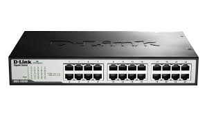
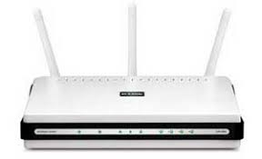
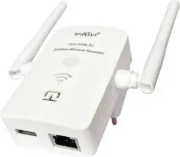

Perangkat perantara adalah Perangkat yang berfungsi untuk menghubungkan berbagai perangkat dalam sebuah jaringan agar dapat berkomunikasi satu sama lain. Perangkat perantara bertindak sebagai penghubung atau jembatan di antara perangkat-perangkat jaringan, memastikan bahwa data dapat mencapai tujuan dengan benar.
Switch Switch adalah perangkat dalam jaringan komputer yang digunakan untuk menghubungkan beberapa perangkat, seperti komputer, server, printer, atau perangkat jaringan lainnya, dalam suatu jaringan lokal (Local Area Network atau LAN).
Fungsi utama switch adalah untuk mengirimkan data secara efisien dari satu perangkat ke perangkat lain dalam jaringan dengan menggunakan alamat Media Access Control (MAC). Dengan kata lain, switch bertindak sebagai pengatur trafik data di dalam jaringan.

Sumber gambar: https://diengcyber.com/apa-itu-switch-jenis-beserta-fungsinya/
Bridge adalah sebuah alat yang digunakan untuk membuat segmen dan memperluas suatu jaringan. Penggunaan bridge memungkinkan beberapa jaringan terpisah dapat dihubungkan secara aman, termasuk jaringan LAN.

Sumber gambar: https://blog.unnes.ac.id/ayukwitantri/2016/04/01/pengertian-bridge-dan-fungsinya//
Repeater adalah sebuah alat atau perangkat khusus yang berfungsi untuk menerima dan memperluas jangkauan sinyal WiFi. Selain WiFi, repeater jenis lain juga sering digunakan untuk kabel. Repeater kabel berfungsi untuk memperkuat sinyal yang ditransmisikan via kabel jaringan.

Sumber gambar: https://pemasangan.com/fungsi-repeater-dalam-jaringan-komputer//